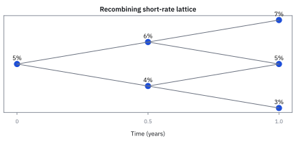
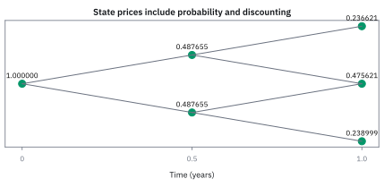
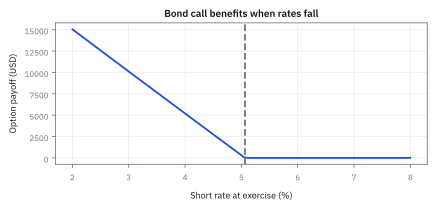
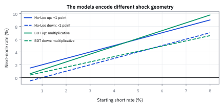
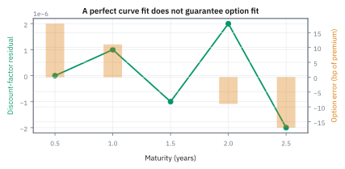

20.3 Rate Lattices: Ho-Lee and Black-Derman-Toy
เติมเส้นทางที่เป็นไปได้ให้ curve วันนี้ แล้วใช้ state prices ส่งมูลค่ากลับมาทีละ node
นักลงทุนถือสัญญาสิทธิซื้อ (European call) อายุ 1 ปี บน zero-coupon bond อายุ 1.5 ปี หน้าตั๋ว \$1,000,000 ที่ strike 0.975 หากดอกเบี้ยเริ่มต้น 5% แล้วแยกเป็น 3% ถึง 7% สิทธินี้มีมูลค่าเท่าใด?
เฉลย: \$2,564.15 คำนวณผ่าน rate lattice สองก้าวที่นำ Arrow-Debreu state prices ไปคูณกับ payoff ปลายทาง หากใช้อัตราเฉลี่ยเพียงตัวเดียวคำนวณจะมองข้ามความไม่สมมาตรของสิทธิในภาวะดอกเบี้ยต่ำไปทั้งหมด
ศัพท์ของ lattice model
- short rate
- อัตราดอกเบี้ยทันทีสำหรับช่วงเวลาสั้นมาก ณ state หนึ่ง ใช้ discount cash flow หนึ่งก้าวบน lattice
- rate lattice
- โครงข่าย discrete ของ short rates ตามเวลาและ state ใช้ประมาณ distribution ของ rates และตั้งราคา cash flow ที่ขึ้นกับเส้นทาง
- recombining tree
- tree ที่เส้นทาง up-then-down กับ down-then-up มาถึง node เดียวกัน ใช้ลดจำนวน states จาก exponential ให้โตแบบกำลังสอง
- risk-neutral probability
- น้ำหนัก state ที่ทำให้ราคาหลัง discount เป็น martingale ใช้ตั้งราคาโดยไม่ต้องใส่ expected return ของนักลงทุนจริง
- Arrow-Debreu state price
- ราคาวันนี้ของหลักทรัพย์ที่จ่ายหนึ่ง USD ใน state และ date เดียวเท่านั้น ใช้รวม present value ของ state-dependent payoff
- backward induction
- การคำนวณมูลค่าจาก terminal payoffs ย้อนกลับทีละ node ด้วย conditional expectation และ discounting ใช้ตั้งราคา derivative บน tree
- calibration
- การเลือก model parameters ให้ราคาจาก model ตรงกับราคาตลาดที่กำหนด ใช้บังคับให้ lattice เริ่มจาก curve และ volatility surface เดียวกับ desk
- Ho-Lee model
- short-rate model แบบ additive Gaussian ที่ใช้ time-dependent drift fit curve และ absolute volatility สร้างการกระจาย ใช้ง่ายแต่ยอมให้ rates ติดลบ
- Black-Derman-Toy (BDT)
- short-rate model แบบ lognormal tree ที่ปรับระดับแต่ละชั้นและความผันผวนให้ fit ตลาด ใช้รักษา short rate เป็นบวกภายใต้รูปแบบดั้งเดิม
- mean reversion
- แรงใน dynamics ที่ดึง rate กลับหาระดับระยะยาว ใช้ควบคุม persistence ของ shock; Ho-Lee แบบพื้นฐานไม่มีแรงนี้
- volatility
- ขนาดการกระจายของการเปลี่ยนแปลง rate ต่อรากเวลา ใช้กำหนดระยะห่างระหว่าง up และ down nodes
- American exercise
- สิทธิใช้ option ได้หลายวันก่อน maturity ใช้กฎเลือกค่ามากกว่าระหว่าง exercise value กับ continuation value ที่ทุก eligible node
สัญกรณ์ หน่วย และ timing convention
| สัญลักษณ์ | ความหมาย | หน่วย |
|---|---|---|
| $t_n=n\Delta t$ | เวลาของ lattice layer ที่ $n$ | ปี |
| $\Delta t$ | ความยาวหนึ่ง time step | ปี |
| $r_{n,j}$ | อัตราดอกเบี้ยระยะสั้นแบบทบต้นต่อเนื่อง ณ node ที่ชั้นเวลา $n$ และสถานะ $j$ | ต่อปี |
| $B_{n,j}$ | one-step discount factor จาก node $(n,j)$ | USD ที่ node ต่อ USD ใน layer ถัดไป |
| $q$ | risk-neutral up probability ในตัวอย่าง | ความน่าจะเป็น |
| $Q_{n,j}$ | Arrow-Debreu state price ของ node $(n,j)$ | USD วันนี้ต่อ USD ที่ node |
| $D(0,t_n)$ | market discount factor ถึง layer $n$ | USD วันนี้ต่อ USD ที่ $t_n$ |
| $\sigma_r$ | absolute short-rate volatility ของ Ho-Lee | ต่อรากปี |
| $\alpha_n$ | ตัวเลื่อนระดับอัตราของแต่ละชั้นเวลา ปรับจนราคาที่ tree คำนวณได้ตรงกับ curve ในตลาด | ต่อปี |
| $P(t,T)$ | ราคา ณ $t$ ของ zero-coupon bond ที่จ่ายหนึ่ง USD ณ $T$ | USD |
| $X$ | strike price ของ bond option ต่อหนึ่ง USD face | USD |
| $V_{n,j}$ | derivative value ที่ node $(n,j)$ ต่อ notional ที่ระบุ | USD |
| $N$ | face amount ของ bond option | USD |
| $B_t$ | cash account ที่เริ่ม \$1 แล้วทบด้วย short rate ทีละงวด | USD |
| $C_{t}$ | เงินที่ security จ่ายตอนงวด $t$ เช่น coupon | USD |
| $F_k,\ G_0,\ S_n$ | ราคา futures ณ งวด $k$ ราคา forward ที่ตกลงวันนี้ และราคาของสินทรัพย์ตอนส่งมอบ | USD |
| $a_i,\ b_i$ | ระดับและระยะห่างของ short rate ในงวด $i$ ของ Ho-Lee ตามสไลด์ | ต่องวด |
ที่มาที่ไป: แบบจำลองที่ต้องตรงกับราคาตลาดวันนี้เป๊ะ ๆ
ตลาดพันธบัตรสหรัฐฯ เพียงแห่งเดียวมีมูลค่ากว่า 35.3 ล้านล้าน USD ซึ่งเต็มไปด้วยตราสารหนี้แฝงสิทธิ์และ derivative ที่ต้องการการประเมินมูลค่าอย่างแม่นยำ
แบบจำลองอัตราดอกเบี้ยในหัวข้อ 12.4 มีข้อจำกัดเมื่อใช้ parameter คงที่ คือไม่สามารถ fit ราคา bond ทุกอายุของ curve ใด ๆ ได้พอดี จึงต้องตรวจ residual ก่อนนำไปใช้งาน
นั่นเป็นปัญหาร้ายแรง เพราะถ้าแบบจำลองตั้งราคาของที่มีอยู่แล้วยังผิด ก็ไม่มีเหตุผลให้เชื่อว่ามันจะตั้งราคาของที่ซับซ้อนกว่าได้ถูก
Thomas Ho กับ Sang Bin Lee เสนอทางแก้ในปี 1986 โดยปล่อยให้แบบจำลองมีตัวปรับที่ต่างกันในแต่ละช่วงเวลา แล้วเลือกค่าเหล่านั้นให้ราคาตรงกับตลาดพอดี
Fischer Black, Emanuel Derman และ William Toy ต่อยอดในปี 1990 โดยทำงานบน log ของอัตรา เพื่อไม่ให้อัตราติดลบ ซึ่งในยุคนั้นถือเป็นข้อกำหนดที่ขาดไม่ได้
ทำไมตลาดดอกเบี้ยต้องมีต้นไม้ของตัวเอง
สไลด์เปิดด้วยขนาดตลาด ปลายปี 2012 ไตรมาสที่สาม ตาม Securities Industry and Financial Markets Association พันธบัตรสหรัฐมีมูลค่า 35.3 ล้านล้าน USD รัฐบาล 10.7 ล้านล้าน (30.4%) บริษัท 8.6 (24.3%) mortgage 8.2 (23.3%) ท้องถิ่น 3.7 (10.5%) agency 2.4 (6.7%) และ asset-backed 1.7 (4.8%) ขณะที่ตลาดหุ้นสหรัฐราว 26 ล้านล้าน
derivative บนตลาดนี้ก็ใหญ่ ทั้ง bond futures, cap, floor, swap และ swaption แต่ยากกว่าหุ้นเพราะต้องจำลองทั้ง curve ตัวแปรที่ใช้จึงเป็น short rate คืออัตราที่ใช้หนึ่งงวดข้างหน้า สุ่มตามเวลาแต่รู้ค่าตั้งแต่ต้นงวด
ต้นไม้หุ้นเริ่มจากโอกาสจริงแล้วหาโอกาสใต้ Q จากการลอกหุ้น แต่ short rate ไม่ใช่ของที่ซื้อขายได้ จึงกำหนดโอกาสใต้ Q ตรง ๆ ค่าใดก็ได้ระหว่าง 0 กับ 1 ไม่มี arbitrage คอร์สใช้ครึ่งต่อครึ่ง งานยากจึงย้ายไปที่การ calibrate ดอกเบี้ยทุก node ให้ตรงราคาของที่ซื้อขายคล่อง แล้วใช้ต่อกับของที่ไม่คล่อง
ประกาศ convention ของ tree ก่อนคำนวณ
ให้เวลาขยับทีละ 6 เดือน และเงินทุกก้อนเป็น USD ที่แต่ละจุดของ tree เรารู้ short rate ของช่วงถัดไป จึงลดเงินอนาคตกลับมาได้หนึ่งก้าว
เริ่มด้วยทางขึ้นและลงที่โอกาส 0.5 เท่ากัน. สองทางกลับมาจุดกลางเดียวกันได้ จึงเรียก recombining tree
ต่างจาก tree ของหุ้นที่เริ่มจากความผันผวนแล้วคำนวณความน่าจะเป็น ใน rate lattice เรากลับทิศ: กำหนดให้โอกาสขึ้นและลงเท่ากับ 0.5 เสมอ แล้ว calibrate ค่า short rate ในแต่ละ node ให้ราคา bond บนต้นไม้ตรงกับ discount curve วันนี้เป๊ะ ๆ
คำว่า continuously compounded บอกแค่ว่าแปลงเงินอนาคตกลับวันนี้แบบไหน. ตอนนี้ยังไม่ใส่ default, transaction cost หรือ rate ที่แกว่งในงวด เพราะต้องทำ toy tree ให้จบก่อน. งานจริงค่อย calibrate ทุกชั้นให้ตรงกับราคาตลาด
ขั้นที่ 1 — นิยามของกฎคิดลดหนึ่งก้าวที่ใช้ซ้ำทุก node
บรรทัดนี้เป็น นิยาม ของกฎเดียวที่ใช้สร้างทั้งโครงตาข่าย ไม่ใช่ผลที่พิสูจน์ รูปของมันมาจากหัวข้อ 19.1 คือทบต้นต่อเนื่องหนึ่งก้าวเวลา จุดสำคัญคืออัตราที่ใช้เป็นอัตราของ node นั้นเอง ไม่ใช่อัตราเดียวทั้งโครง ซึ่งเป็นทั้งหมดที่ทำให้แบบจำลองนี้ต่างจากการคิดลดด้วยอัตราคงที่ มูลค่าที่ node หนึ่งจึงเท่ากับค่าเฉลี่ยของสอง node ถัดไป คิดลดด้วยอัตราของตัวเอง
$B_{n,j}$ คือราคาที่ node ของหนึ่ง USD ที่ได้แน่นอนใน layer ถัดไป อัตรามีหน่วยต่อปีและ time step มีหน่วยปี exponent จึงไม่มีหน่วย
security ที่จ่าย coupon และ cash account
ขั้นที่ 1 คิดลดเงินหนึ่งก้าว ถ้า security จ่ายเงิน $C$ ในงวดหน้าด้วยก็บวกเข้าไปก่อนคิดลด และถ้าทบ short rate ไปเรื่อย ๆ จะได้บัญชีเงินสดที่ใช้เป็นตัวหารของทุกราคา
$B_t$ ปลอดภัยทีละงวด เพราะรู้ $B_{t+1}$ ตั้งแต่ $t$ แต่ไม่ปลอดภัยเมื่อมองหลายงวด สองแถวที่มี $B_2$ คือบัญชีเดียวกันบนต้นไม้ของคอร์สที่ต่างกันตามว่างวดแรกดอกเบี้ยขึ้นหรือลง
หารราคาด้วย $B_t$ แล้วค่าเฉลี่ยใต้ $\mathbb Q$ ของงวดหน้าเท่ากับค่าวันนี้ ราคาที่หารแล้วจึงเป็น martingale แถวสุดท้ายตรวจกับ bond อายุ 4 งวด: ค่าเฉลี่ยของ 79.27 กับ 84.43 หาร 1.06 ได้ 77.22 พอดี
แล้วเอาไปใช้ทำอะไรได้จริงบ้าง
การสร้างต้นไม้อัตราดอกเบี้ยที่ตรงกับราคาตลาดวันนี้ เป็นฐานของการตั้งราคา derivative อัตราดอกเบี้ย
ใช้ตั้งราคาสัญญาที่ให้สิทธิ์เลือกในอนาคต เช่นสิทธิ์ไถ่ถอนก่อนกำหนด
ใช้ราคาสถานะเป็นเครื่องมือที่คำนวณครั้งเดียวแล้วใช้ซ้ำได้กับหลายสัญญา
ใช้ตรวจว่าต้นไม้ที่สร้างขึ้นให้ราคาตราสารพื้นฐานตรงกับตลาดจริง ก่อนใช้ตั้งราคาของที่ซับซ้อนกว่า
Figure 20.3a — short-rate lattice สองก้าว

rate เริ่ม 5% แล้วแยกเป็น 6% หรือ 4% ในครึ่งปีแรก ก่อน recombine เป็นสาม states ที่ 7%, 5% และ 3% ณ ปีที่ 1 ระยะห่างคงที่สะท้อน additive shock ของ Ho-Lee-style tree
ขั้นที่ 2 — เริ่ม Arrow-Debreu recursion จากหนึ่ง USD วันนี้
แทนที่จะเดินย้อนทีละสัญญา มีวิธีที่เร็วกว่า คือคำนวณราคาของ 'หนึ่งดอลลาร์ที่จ่ายเฉพาะ state นั้น' ไว้ล่วงหน้า แล้วนำกลับมาใช้ได้กับทุกสัญญา
state price รวมทั้ง risk-neutral probability และ discounting แล้ว จึงไม่ใช่โอกาสแม้จะมีค่าเป็นบวกและรวมข้าม states ได้
ขั้นที่ 3 — คำนวณ state prices ที่ครึ่งปี
เดิน recursion ก้าวแรกจากวันนี้ไปครึ่งปี
แต่ละ state ได้ risk-neutral probability 0.5 และถูกคิดลดด้วย short rate 5% เป็นเวลาครึ่งปี
สองตัวเท่ากันเพราะที่ก้าวแรกทั้งสองทางใช้อัตราคิดลดตัวเดียวกัน คือ $r_{0,0}$
ขั้นที่ 4 — state price ของ middle node ต้องรวมสองเส้นทาง
ตั้งแต่ก้าวที่สองเป็นต้นไป บาง node มาถึงได้หลายทาง ต้องบวกทุกทางเข้าด้วยกัน สูตรข้างล่างอธิบายว่าทำไมถึงบวก และทำไมตัวคิดลดของสองทางถึงไม่เท่ากัน สองข้อนี้คือสิ่งที่ทำให้โค้ดที่เขียนผิดยังให้ตัวเลขที่ดูสมเหตุสมผล
โครงตาข่ายถูกออกแบบให้ขึ้นแล้วลงมาบรรจบกับลงแล้วขึ้นพอดี node กลางจึงมีสองเส้นทางเข้ามาถึง ไม่ใช่ทางเดียว
คำนวณมูลค่าวันนี้ของเงินหนึ่งดอลลาร์ที่มาทางแรก คือราคาของการไปถึง node ก่อนหน้า คูณโอกาสที่จะลงจาก node นั้น คูณตัวคิดลดของ node นั้น แล้วทำอย่างเดียวกันกับทางที่สอง สังเกตว่าอัตราที่ใช้คิดลดต่างกัน เพราะเป็นอัตราของ node ที่ต่างกัน
เหตุผลที่บวกกันได้คือสองเส้นทางเกิดพร้อมกันไม่ได้ จึงเป็นกองที่ไม่ทับกัน ซึ่งเป็นกฎเดียวกับหัวข้อ 1.1
จุดที่พลาดบ่อยคือเลือกเส้นทางใดเส้นทางหนึ่ง ซึ่งจะได้ราคาต่ำกว่าความจริงเสมอ เพราะทิ้งอีกครึ่งหนึ่งของความเป็นไปได้ไป
ที่มาของสมการเดินหน้า — พิสูจน์ Arrow-Debreu recursion จากการคิดย้อนกลับ
สมการเดินหน้าของ Arrow-Debreu state price ไม่ได้เป็นสูตรที่ตั้งขึ้นมาลอย ๆ แต่เป็นผลลัพธ์โดยตรงจากการคำนวณย้อนกลับ (backward induction) ของตราสารพื้นฐาน (elementary security)
การคำนวณเดินหน้าช่วยให้เราสามารถหา state prices ของทั้ง tree ได้ในรอบเดียว ซึ่งเร็วกว่าการคิดย้อนกลับทีละ cash flow อย่างมากเมื่อต้อง calibrate กับพันธบัตรหลายช่วงอายุ
สมมติเราถือตั๋วสัญญาที่จ่ายเงินหนึ่งดอลลาร์เฉพาะที่ node $(n+1, s)$ และจ่ายศูนย์ในจุดอื่นทั้งหมด หากคิดย้อนกลับไปที่ layer $n$ ตราสารนี้จะมีมูลค่าเป็นบวกเฉพาะสอง node ก่อนหน้าเท่านั้น
ที่ node $(n, s-1)$ การก้าวขึ้นให้เงินหนึ่งหน่วย จึงมีมูลค่าคิดลด $\frac{q_u}{1 + r_{n,s-1}}$ ส่วนที่ node $(n, s)$ การก้าวจมลงให้เงินหนึ่งหน่วย จึงมีมูลค่าคิดลด $\frac{1-q_d}{1 + r_{n,s}}$
มูลค่าวันนี้ของสัญญาจึงเป็นผลรวมถ่วงน้ำหนักของมูลค่าในแต่ละ node ด้วย $Q_{n,j}$ เมื่อแทนค่าและกำหนดความน่าจะเป็นเสี่ยงเป็นกลางเท่ากับครึ่งหนึ่ง จึงได้สมการเดินหน้าทันที
ขั้นที่ 5 — ค่าที่ครบหนึ่งปีและ discount-factor check
เดิน recursion ต่ออีกหนึ่งก้าว โดยใช้ short rate ที่ครึ่งปีซึ่งเป็น 6% ทางบน และ 4% ทางล่าง node กลางรับมาจากสองทางจึงต้องบวกกัน
node กลางมาถึงได้สองทาง คือขึ้นแล้วลง กับลงแล้วขึ้น ค่าของสองทางนี้เท่ากับ $Q_{2,uu}$ และ $Q_{2,dd}$ พอดี จึงบวกกันได้ตรง ๆ
ผลรวม state prices ทุก state ที่วันเดียวกันต้องเท่ากับราคา zero-coupon bond ของวันนั้น นี่คือ calibration check ที่สำคัญที่สุดของทั้งหัวข้อ
Figure 20.3b — Arrow-Debreu prices ไหลและรวมบน tree

middle state มีราคามากกว่าสองปลายเพราะรับเงินจากสองเส้นทาง ผลรวมชั้นปีที่ 1 เท่ากับ 0.951241 จึงเชื่อม state model กลับสู่ discount curve วันนี้
คำตอบ — European call บน zero-coupon bond
คำถาม: นักลงทุนถือสัญญาสิทธิซื้อ (European call) อายุ 1 ปี บน zero-coupon bond อายุ 1.5 ปี หน้าตั๋ว \$1,000,000 ที่ strike 0.975 หากดอกเบี้ยเริ่มต้น 5% แล้วแยกเป็น 3% ถึง 7% สิทธินี้มีมูลค่าเท่าใด?
ของที่มี: ขั้นที่ 1 ถึง 8 option ใช้สิทธิ์ปีที่ 1 strike 0.975 ต่อหน้าตั๋ว \$1 ที่วันใช้สิทธิ์ short rate คงที่อีกครึ่งปี จึงหาราคา bond ได้ทุก node
1 ราคา bond ที่วันใช้สิทธิ์คือ 0.965605, 0.975310 และ 0.985112 ตามดอกเบี้ย 7, 5 และ 3%
2. payoff มีแค่สอง node ล่าง node บนสุด bond ต่ำกว่า strike จึงเป็นศูนย์
3 รวม payoff คูณ state price ได้มูลค่าวันนี้ \$2,564.15
ตรวจเองใน 10 วินาที: payoff ของ node ดอกเบี้ย 3% คือ (0.985112 − 0.975) คูณหนึ่งล้าน ได้ \$10,111.94 ก่อนถ่วงด้วย state price
แปลว่าอะไร: call บน bond คือการเดิมพันว่าดอกเบี้ยจะลง มูลค่ามาจาก node ดอกเบี้ยต่ำล้วน ๆ ถ้าใช้ดอกเบี้ยเฉลี่ยตัวเดียว bond จะไม่ถึง strike และจะตีราคา option เป็นเกือบศูนย์
ขั้นที่ 6 — หา underlying bond price ในสาม exercise states
จะตั้งราคา option บน bond ต้องรู้ก่อนว่า bond ราคาเท่าไรในแต่ละ state ตอนใช้สิทธิ์
bond price สูงเมื่อ rate ต่ำเพราะ terminal one USD ถูก discount น้อยลง ลำดับของ node จึงกลับกับลำดับของราคา bond
ขั้นที่ 7 — คำนวณ payoff ที่ปลายทางทีละ state
บรรทัดนี้คือการแทนตัวเลขลงในนิยามของ payoff ไม่ใช่สูตรใหม่ แต่ละ state มีราคา bond ของตัวเองจากขั้นก่อนหน้า เอาไปลบราคาใช้สิทธิ์ แล้วเก็บเฉพาะส่วนที่เป็นบวก เพราะไม่มีใครใช้สิทธิ์เมื่อขาดทุน จากนั้นคูณมูลค่าหน้าตั๋วหนึ่งล้าน ผลที่ได้บอกว่า option มีค่าเด่นเฉพาะใน state ที่อัตราต่ำ ซึ่งเป็น state ที่ราคา bond สูง และเป็นเหตุผลที่คนซื้อ option แบบนี้เพื่อป้องกันอัตราลง
ใช้ positive part ที่ exercise date แล้วคูณ face amount หนึ่งล้าน USD option มีค่าเด่นใน low-rate state
คูณทีละ state โดยไม่คิดลดซ้ำ
payoff ทุกตัวเป็น USD ที่ปี 1 แม้ underlying bond จะจ่ายปี 1.5 เพราะเราเปรียบเทียบราคาของ bond ณ วันใช้สิทธิแล้ว state price จึงย้ายเงินจากปี 1 กลับวันนี้ได้ทันที
node กลางมีโอกาสรวมมากกว่าแต่จ่ายน้อยมาก ส่วน node ดอกเบี้ยต่ำจ่ายมากกว่า จึงเป็นต้นทางของราคา option ส่วนใหญ่ ถ้าเผลอคูณ discount factor ปี 1 อีกครั้งจะคิดลดเงินซ้ำ
ขั้นที่ 8 — รวม state-contingent payoffs เป็นราคาวันนี้
นี่คือจุดที่ state prices คุ้มค่าที่สุด คูณ payoff กับ state price แล้วบวก จบในบรรทัดเดียว ไม่ต้องเดินย้อนทั้งต้นไม้
Arrow-Debreu price อยู่ในหน่วย USD วันนี้ต่อ USD ที่ state จึงคูณ payoff แต่ละ state แล้วรวมได้ present value โดยไม่ discount ซ้ำ
Figure 20.3c — bond call มีค่าใน low-rate states

เมื่อ exercise rate ลดต่ำกว่าเกือบ 5% bond price ข้าม strike และ call payoff เริ่มเป็นบวก เส้น payoff ไม่สมมาตรจึงต้องรู้ทั้ง distribution ไม่ใช่เพียง expected rate
จากตัวอย่างไป Ho-Lee ที่ calibrate จริง
Ho-Lee เขียน node เป็น deterministic level shift บวก cumulative additive shocks แต่ละ $\alpha_n$ ถูกแก้ให้ผลรวม state prices ของ layer ถัดไปตรง market discount factor โดยยึดความผันผวนไว้ จากนั้น calibrate volatility กับ caplet หรือ swaption prices เพราะ curve อย่างเดียวระบุ distribution ไม่ได้ การ fit discount curve สมบูรณ์จึงยังไม่พิสูจน์ว่า option price ถูก
ขั้นที่ 9 — นิยามของวิธีวาง node ให้เส้นทางกลับมาบรรจบกัน
บรรทัดนี้เป็น นิยาม ของวิธีสร้างโครงตาข่ายที่เราเลือก ไม่ใช่ผลที่พิสูจน์ เงื่อนไขที่ต้องการคือขึ้นแล้วลงต้องมาถึงจุดเดียวกับลงแล้วขึ้น ซึ่งทำได้โดยให้ระยะห่างระหว่าง state เท่ากันหมดในแต่ละชั้น ก้อนแรกเลื่อนทั้งชั้นขึ้นลงพร้อมกัน ซึ่งจะถูกเลือกในขั้นถัดไปให้ตรงกับตลาด ก้อนที่สองสร้างระยะห่างจากความผันผวน โดยวัดเป็นอัตราโดยตรง ไม่ใช่เป็นเปอร์เซ็นต์ของอัตรา ซึ่งเป็นข้อเสียเมื่ออัตราต่ำมาก เพราะปล่อยให้ติดลบได้
$\alpha_n$ ขยับทั้ง layer เพื่อ fit curve และพจน์ state สร้างระยะห่างจากความผันผวนแบบ absolute rate
แก้ระดับทั้งชั้นจากราคา bond
ให้ x เป็นส่วนขึ้นลงของ rate ที่กำหนดจากความกว้างของ tree ก่อน ส่วน alpha เลื่อน rate ทุก node ในชั้นเท่ากัน จึงดึง exponential ของ alpha ออกมานอกผลรวมได้
หารราคา bond ตลาดด้วย H ซึ่งคำนวณได้จาก state prices เดิม แล้วใช้ log ย้อน exponential จึงได้ระดับชั้นใหม่ นี่คือการ calibrate Ho-Lee หนึ่งชั้นด้วยสูตร ไม่ใช่การเดาปุ่ม เมื่อเปลี่ยนความกว้าง tree ก็แก้ alpha ใหม่ให้ราคา bond ตรงได้ แสดงว่าราคา bond อย่างเดียวไม่บอกความกว้างที่ถูกต้อง
Ho-Lee ในรูปของสไลด์ และการ calibrate ด้วย Solver
ต้นไม้ที่ไม่มีข้อจำกัดมี $r_{i,j}$ และ $q_{i,j}$ ทุก node มากเกินกว่าข้อมูลจะบอกได้ สไลด์จึงตรึง $q=1/2$ แล้วให้ $r_{i,j}$ มีรูปตายตัว
จาก node หนึ่ง งวดหน้าไปได้สองค่าห่างกัน $b_{i+1}$ ด้วยโอกาสครึ่งต่อครึ่ง ส่วนเบี่ยงเบนจึงเป็นครึ่งหนึ่งของระยะห่าง Ho-Lee มี parameter $2n$ ตัว ไม่ค่อยเหมือนจริงแต่มีอิทธิพลมาก ขั้นที่ 9 เขียนแบบเดียวกันโดยวางศูนย์กลางไว้กลางชั้น ระยะห่าง $b$ จึงเท่ากับ $2\sigma_r\sqrt{\Delta t}$
แถวสุดท้ายคือ BDT $\log a_i$ คือระดับของ log ดอกเบี้ย และ $b_i$ คือความผันผวนของ log ถ้างวดไม่มากคอร์ส calibrate ใน Excel ด้วย Solver ส่วนงานจริงใช้ optimizer ที่เร็วกว่า
ขั้นที่ 10 — สมการ calibration ของแต่ละ layer
โครงตาข่ายต้องคายราคาที่ตลาดบอกออกมาให้ตรงเป๊ะ ไม่งั้นมันก็ไม่ใช่แบบจำลองของตลาดนี้ สูตรข้างล่างแปลงข้อเรียกร้องนั้นเป็นสมการหนึ่งสมการต่อหนึ่งชั้น และเพราะมีตัวไม่รู้ค่าตัวเดียวต่อชั้น มันจึงแก้ได้เสมอ
บังคับให้ราคาที่โครงตาข่ายคายออกมา เท่ากับราคาที่อ่านจากตลาดผ่าน curve ของหัวข้อ 20.1 เหตุผลไม่ใช่ความสวยงาม ถ้าแบบจำลองให้ราคาต่างจากตลาด มันกำลังบอกว่ามีเงินฟรีอยู่ในของที่ซื้อขายกันทุกวัน
ทีนี้ใช้รูปการวาง node จากขั้นที่ 9 ซึ่งทุก state ในชั้นเดียวกันใช้ตัวเลื่อนตัวเดียวกัน คูณด้วยก้าวเวลา รากของก้าวเวลาจึงกลายเป็นยกกำลังสามส่วนสอง
กลเม็ดอยู่บรรทัดสุดท้าย ดึงส่วนที่เหมือนกันทุก state ออกมานอกผลรวม เหลือตัวไม่รู้ค่าตัวเดียวคือระดับของชั้น
จึงแก้ได้ทีละชั้น จากสั้นไปยาว เป็นวิธีเดียวกับ bootstrap ในหัวข้อ 20.1 ไม่ต้องแก้ทั้งต้นไม้พร้อมกัน ซึ่งจะเป็นงานที่ใหญ่เกินไป
BDT เปลี่ยนสิ่งที่ shock กระทำ
BDT แบบดั้งเดิมให้ log short rate กระจายเป็น tree จึงทำให้ rate เป็นบวกและตีความผันผวนเป็น relative move แทน absolute move ระดับแต่ละ layer และความกว้างของ tree ถูก calibrate กับ curve กับ option volatility quotes ผลคือ Ho-Lee เหมาะกับ negative-rate possibility และ arithmetic โปร่งใส ส่วน BDT รักษา positivity แต่มีพฤติกรรมแปลกเมื่อ rate ใกล้ศูนย์
ขั้นที่ 11 — รูป node ของ BDT ที่แสดง positivity
Ho-Lee ปล่อยให้อัตราติดลบได้ BDT แก้ปัญหานั้นด้วยการทำงานบน log ของอัตราแทน
$a_n$ เป็นระดับบวกที่ fit curve และ exponential ทำให้ทุก node บวก ส่วน $\sigma_n$ ควบคุม relative spacing ของ layer
การ calibrate model BDT — การันตีคำตอบของระดับอัตราดอกเบี้ยในแต่ละชั้น
การ calibrate model BDT อาศัยคุณสมบัติที่ผลรวมคิดลดเป็น function ทางเดียวแท้จริง (strictly monotonic) เมื่อเทียบกับ parameter $a_n$ ผู้ใช้งานจึงสามารถใช้วิธีหาค่ารากมิติเดียวอย่าง bisection หรือ Newton-Raphson เพื่อหาคำตอบ $a_n$ ที่แน่นอนได้ในเวลาไม่กี่มิลลิวินาที
ต่างจาก model ทั่วไปที่ต้องแก้ optimization หลายมิติพร้อมกันและอาจติดใน local minima โครงสร้างแบบชั้นต่อชั้นของ BDT ทำให้การ calibrate กับ yield curve ของตลาดมีความเสถียรและได้คำตอบชุดเดียวเสมอ
การหา parameter $a_n$ ใน model BDT ทำได้ทีละชั้น โดยผลรวมของ state prices ใน layer ถัดไปต้องเท่ากับ discount factor ของตลาด $D(0, t_{n+1})$ พอดี
ด้านขวาของสมการเป็น function ลดลงแท้จริงของ $a_n$ เสมอ เพราะเมื่อ $a_n$ เพิ่มขึ้น อัตราดอกเบี้ยทุก node จะสูงขึ้น ทำให้ตัวคิดลดมีค่าน้อยลง
เมื่อ $a_n$ เข้าใกล้ศูนย์ ค่าผลรวมจะลู่ไปหา $D(0, t_n)$ ซึ่งมากกว่าเป้าหมาย และเมื่อ $a_n$ เพิ่มขึ้นไร้ขีดจำกัด ค่าผลรวมจะลู่เข้าหาศูนย์ จึงการันตีว่ามีคำตอบบวกเพียงหนึ่งเดียวเสมอ
ขั้นที่ 12 — ต้นไม้ของคอร์ส: ดอกเบี้ยเริ่ม 6% ขึ้นคูณ 1.25 ลงคูณ 0.9
สไลด์ของคอร์สใช้ต้นไม้ short rate ห้าก้าว ดอกเบี้ยต่องวดเริ่มที่ 6% งวดถัดไปคูณ 1.25 หรือ 0.9 โอกาสใต้ $\mathbb Q$ ครึ่งต่อครึ่ง แล้วตั้งราคา zero-coupon bond หน้าตั๋ว 100 ที่ครบกำหนดงวดที่ 4
ต้นไม้นี้กลับมาพบกันเพราะ 1.25 คูณ 0.9 เท่ากับ 0.9 คูณ 1.25 ขึ้นแล้วลงกับลงแล้วขึ้นจึงได้ดอกเบี้ยเดียวกัน แต่ละ node ของราคาคือค่าเฉลี่ยของสองลูกคิดลดด้วยดอกเบี้ยของ node นั้นเอง
ตั้งราคา zero-coupon bond ทุกอายุ 1 ถึง 4 แล้วถอด spot rate ออกมา ก็ได้ term structure ทั้งเส้นของวันนี้ แบบจำลอง short rate ตัวเดียวจึงให้แบบจำลองของเส้นอัตราทั้งเส้น สไลด์เตือนว่าต้นไม้คูณแบบนี้ไม่ดึงกลับค่าเฉลี่ย ดอกเบี้ยจึงลอยไปถึง 18.31% ได้ ใช้สอนวิธีคิด ไม่ใช่ใช้งานจริง
ขั้นที่ 13 — state prices ของต้นไม้เดียวกัน
เดินหน้าด้วยสมการในขั้นที่ 2 ถึง 4 จาก $P^e_{0,0}=1$ ได้ราคาวันนี้ของเงิน \$1 ที่จ่ายเฉพาะ node หนึ่ง
node ตรงกลางรับเงินจากสองพ่อแม่ node บนสุดและล่างสุดรับจากพ่อแม่เดียว เมื่อมี state prices แล้ว หลักทรัพย์ใดก็ตามคือผลบวกของเงินที่จ่ายในแต่ละ node คูณ state price ของ node นั้น ไม่ต้องเดินถอยหลังใหม่ทุกครั้ง ราคา 77.22 ออกมาตรงกับขั้นก่อน
ขั้นที่ 14 — option บน zero-coupon bond: European call กับ American put
สไลด์ตั้งราคา European call บน bond ข้างบน strike 84 หมดอายุงวดที่ 2 และ American put strike 88 หมดอายุงวดที่ 3
$H_{t,j}$ คือค่าของการถือต่อ call มีค่าเฉพาะ node ที่ดอกเบี้ยต่ำ เพราะดอกเบี้ยต่ำทำให้ bond แพง ส่วน put ใช้สิทธิ์ทันทีตั้งแต่วันนี้ เพราะ 88 ลบ 77.22 ได้ 10.78 มากกว่าค่าของการรอ 5.80 สไลด์ระบุว่านี่เป็นผลจากตัวเลขที่เลือก ไม่ใช่พฤติกรรมที่พบบ่อยในตลาด
ขั้นที่ 15 — forward กับ futures บน bond coupon 10% ไม่เท่ากัน
bond coupon 10% ต่องวด ครบกำหนดงวดที่ 6 สัญญาส่งมอบงวดที่ 4 หลังจ่ายคูปองงวดที่ 4 แล้ว ราคา forward กับราคา futures ต่างกันแค่การถ่วงด้วยเงินคิดลด
forward มีมูลค่าศูนย์วันทำสัญญา จึงต้องหาร bond ที่คิดลดแล้ว 79.83 ด้วยราคา zero-coupon ของงวดที่ 4 คือ 0.7722 ส่วน futures ปรับกำไรขาดทุนทุกงวด จึงเป็นค่าเฉลี่ยตรง ๆ ใต้ $\mathbb Q$ โดยไม่คิดลด คือเฉลี่ยสองลูกย้อนไปทีละชั้น
สองตัวต่างกัน 0.16 เพราะดอกเบี้ยกับราคา bond เคลื่อนสวนกัน วันที่ bond ขึ้นคือวันที่ดอกเบี้ยลง กำไรจาก futures จึงถูกนำไปลงทุนในวันที่ดอกเบี้ยต่ำ ถ้าดอกเบี้ยไม่สุ่ม สองราคานี้จะเท่ากัน
ทำไม futures เป็น martingale แต่ forward ไม่ใช่
ขั้นที่ 15 ใช้สองสูตรโดยยังไม่บอกที่มา futures ปรับกำไรขาดทุนทุกงวด การเข้าสัญญาไม่มีต้นทุน ส่วน forward จ่ายครั้งเดียวตอนส่งมอบ
$B_n=B_{n-1}(1+r_{n-1})$ รู้ค่าตั้งแต่งวด $n-1$ จึงดึงออกจากค่าเฉลี่ยแล้วตัดทิ้งได้ ราคา futures จึงเป็นค่าเฉลี่ยธรรมดาของงวดหน้า ไม่ต้องคิดลด และที่วันส่งมอบ $F_n=S_n$ ใช้ได้ทั้ง bond ที่มีและไม่มี coupon
forward มีค่าศูนย์ตอนทำสัญญาเหมือนกันแต่เงินไหลครั้งเดียวตอน $n$ ตัวถ่วง $1/B_n$ จึงยังอยู่ และตัวหารคือราคา zero-coupon bond แถวสุดท้ายคือหนึ่งก้าวของการเดินถอยหลังแบบไม่คิดลดใน futures
ขั้นที่ 16 — calibrate BDT กับเส้น spot ของคอร์ส
สไลด์ BDT ของคอร์สใช้ $r_{i,j}=a_ie^{b\,j}$ สิบงวด งวดละหนึ่งปี ตรึง $b=0.005$ แล้วหา $a_i$ ทีละงวดให้ราคา zero-coupon ตรงกับ spot 7.30, 7.62, 8.10, 8.45, 9.20, 9.64, 10.12, 10.45, 10.75 และ 11.22%
งวดแรกมี node เดียว $a_0$ จึงเป็น spot ปีแรกพอดี งวดที่สองมีตัวไม่รู้ตัวเดียว แก้สมการได้ 7.9211% แล้วเดิน state prices ต่อ งวดถัดไปก็มีตัวไม่รู้ตัวเดียวอีก ในไฟล์ Excel ใช้ Solver แก้ทีละงวดหรือพร้อมกันทั้งหมด
เปลี่ยน $b$ เป็น 0.01 แล้ว calibrate ใหม่ $a_i$ ขยับเล็กน้อย ราคา zero-coupon ยังตรงตลาดทุกตัวเหมือนเดิม แต่ราคา option เปลี่ยนมาก หัวข้อ 20.4 จะเห็นเป็นตัวเลข ราคา zero-coupon ไม่มีข้อมูลเรื่องความผันผวนเลย
Figure 20.3d — additive กับ multiplicative shock

Ho-Lee เลื่อน rate ด้วยจำนวน จุด เท่ากันทุกระดับ ส่วน BDT คูณ rate ด้วยสัดส่วนเท่ากัน ความต่างนี้มีผลมากเมื่อ curve ต่ำหรือสูงและเป็น modeling choice ไม่ใช่แค่ชื่อ model
Figure 20.3e — curve fit กับ option fit เป็นคนละเงื่อนไข

level shifts สามารถทำให้ discount factors ตรงตลาดแทบทุก maturity แม้ความผันผวนผิด แต่ option error จะเผย distribution ที่ผิด จึงต้องตรวจทั้ง curve instruments และ volatility instruments
สร้างต้นไม้ใน Excel ที่ยืดหดตามจำนวนงวด
เอกสารประกอบของคอร์สสอนทำต้นไม้ short rate ที่เปลี่ยนขนาดเองสูงสุด 25 งวด ช่อง B2 เก็บ short rate เริ่มต้น B3 เก็บตัวคูณขึ้น u B4 เก็บตัวคูณลง d และ B5 เก็บจำนวนงวด ตั้งชื่อช่อง B3 ว่า u และ B4 ว่า d ให้สูตรอ่านง่าย
แถว 8 เป็นเลขงวด 0 ถึง 25 โดย C8 คือ B8 บวก 1 แล้วลากไปทางขวา แถว 35 เป็นป้าย T=0 ถึง T=25 ต้นไม้เริ่มที่ช่อง B34 ซึ่งดึงค่าจาก B2
สูตรในช่อง C34 ถามสามข้อแล้วลากไปทั้งตาราง ข้อแรก งวดของคอลัมน์นี้เกินจำนวนงวดหรือยัง ถ้าเกินให้เว้นว่าง ข้อสอง ช่องทางซ้ายมีตัวเลขไหม ถ้ามีแปลว่ามาจากการลง ใช้ d คูณช่องซ้าย
ข้อสาม ถ้าช่องซ้ายว่างแต่ช่องซ้ายล่างมีตัวเลข แปลว่าเป็นยอดบนสุดที่มาจากการขึ้น ใช้ u คูณช่องซ้ายล่าง นอกนั้นเว้นว่าง เปลี่ยนจำนวนงวดจาก 6 เป็น 15 ต้นไม้ก็ขยายเอง code ข้างล่างทำกฎเดียวกันใน Python
implementation และ risk interpretation
สร้าง lattice layer-by-layer: รับ market discount factors, เลือก $\Delta t$ และ volatility convention, propagate state prices, root-solve level shift ของ layer ใหม่ แล้ว assert ว่าผลรวม state prices เท่ากับ curve จากนั้นวาง terminal payoff และทำ backward induction สำหรับ American feature ให้เปรียบเทียบ exercise กับ continuation ทุก node Risk ต้องรายงาน curve-node delta, volatility sensitivity, time-step convergence และ model comparison เพราะ tree ที่ fit ราคาเดียวกันอาจ hedge ต่างกัน
ตัวอย่างที่สอง — ต้นไม้ของคอร์ส
คำถาม: ดอกเบี้ยต่องวดเริ่ม 6% ขึ้นคูณ 1.25 ลงคูณ 0.9 zero-coupon bond หน้าตั๋ว 100 ครบงวดที่ 4 ราคาเท่าไร call strike 84 หมดอายุงวดที่ 2 และ American put strike 88 หมดอายุงวดที่ 3 ราคาเท่าไร?
ของที่มี: ขั้นที่ 12 ถึง 15
1. zero-coupon bond ราคา 77.22 spot rate 4 งวด 6.68% ต่องวด
2. call ราคา 2.97 put ราคา 10.78 และควรใช้สิทธิ์ทันที
3. forward บน bond coupon 10% ส่งมอบงวดที่ 4 ราคา 103.38 futures ราคา 103.22
ตรวจเองใน 10 วินาที: 100 คูณผลบวก state prices งวดที่ 4 คือ 0.0449 + 0.1868 + 0.2901 + 0.1992 + 0.0511 ได้ 77.22
แปลว่าอะไร: เมื่อมีต้นไม้ของ short rate ทุกอย่างที่ขึ้นกับดอกเบี้ยตั้งราคาได้ด้วยวิธีเดียว คือเดินถอยหลังหรือคูณ state prices ความต่างของ forward กับ futures บอกว่าดอกเบี้ยสุ่มจริงมีผลต่อราคา
กับดัก: failure modes และ model limits
อย่าอ่าน $q=0.5$ เป็นโอกาสจริงที่ rate ขึ้น, discount state price ซ้ำ, ลืมรวมสองเส้นทางที่ middle node หรือ calibrate volatility จาก curve อย่างเดียว Ho-Lee ไม่มี mean reversion และสร้าง rates ติดลบได้; BDT รักษา positivity แต่ relative volatility อาจไม่เข้ากับตลาดใกล้ศูนย์ ทั้งคู่เป็น one-factor approximation และพลาด multiple-curve, stochastic basis กับ volatility smile — tree ที่มี node ละเอียดขึ้นไม่ได้แปลว่าสมมติฐานที่ใช้สร้าง node นั้นถูกต้องตามไปด้วย
ข้อจำกัด: วิธีนี้สมมติอะไร และของจริงเป็นอย่างไร
| เรื่อง | วิธีนี้สมมติว่า | ของจริงเป็นอย่างไร | ผลที่ตามมาเวลาใช้งาน |
|---|---|---|---|
| ปัจจัยเดียว | อัตราทั้งเส้นขยับตามตัวแปรตัวเดียว | เส้นบิดและโค้งได้ | สัญญาที่ขึ้นกับรูปร่างของเส้นถูกตั้งราคาผิด |
| อัตราติดลบ | แบบจำลองแรกยอมให้ติดลบ | เคยถือเป็นข้อบกพร่อง แต่ปัจจุบันเกิดขึ้นจริง | ต้องเลือกแบบจำลองตามภาวะตลาดที่กำลังใช้งาน |
| การปรับให้ตรงตลาด | ปรับให้ตรงราคาวันนี้แล้วพอ | ปรับตรงราคาแล้วไม่ได้แปลว่าทำนายอนาคตได้ | แบบจำลองสองตัวที่ตรงราคาวันนี้เท่ากัน อาจให้ราคาสัญญาซับซ้อนต่างกันมาก |
แถวล่างเป็นความเสี่ยงของแบบจำลองที่ใหญ่ที่สุดในงาน derivative อัตราดอกเบี้ย
state-price recursion และ bond option ที่ตรวจซ้ำได้
import numpy as np
q, dt = 0.5, 0.5
r0, ru, rd = 0.05, 0.06, 0.04
Q1 = np.array([q, 1-q])*np.exp(-r0*dt)
Q2 = np.array([
Q1[0]*q*np.exp(-ru*dt),
Q1[0]*(1-q)*np.exp(-ru*dt)+Q1[1]*q*np.exp(-rd*dt),
Q1[1]*(1-q)*np.exp(-rd*dt)])
r_ex = np.array([0.07, 0.05, 0.03])
P = np.exp(-r_ex*dt)
payoff = 1_000_000*np.maximum(P-0.975, 0)
V0 = Q2 @ payoff
assert abs(Q2.sum()-0.9512413148932919) < 1e-12
assert abs(V0-2564.1477619102694) < 1e-8
r = [[0.06 * 1.25**j * 0.9**(i - j) for j in range(i + 1)] for i in range(6)] # course tree
back = lambda V, i: [(0.5 * V[j + 1] + 0.5 * V[j]) / (1 + r[i][j]) for j in range(i + 1)]
Z = {4: [100.0] * 5}
for i in range(3, -1, -1): Z[i] = back(Z[i + 1], i)
assert abs(Z[0][0] - 77.22) < 0.005 and abs((100 / Z[0][0])**0.25 - 1 - 0.0668) < 1e-4
C = [max(0, z - 84) for z in Z[2]]
for i in (1, 0): C = back(C, i)
assert abs(C[0] - 2.97) < 0.005
Pt = [max(0, 88 - z) for z in Z[3]]
for i in (2, 1, 0): Pt = [max(c, 88 - z) for c, z in zip(back(Pt, i), Z[i])]
assert abs(Pt[0] - 10.78) < 0.005
B = back([110.0] * 7, 5); B = back([b + 10 for b in B], 4) # ex-coupon at t = 4
G = B
for i in (3, 2, 1, 0): G = back(G, i)
Fu = B
for i in (3, 2, 1, 0): Fu = [0.5 * (Fu[j + 1] + Fu[j]) for j in range(i + 1)]
assert abs(G[0] / (Z[0][0] / 100) - 103.38) < 0.005 and abs(Fu[0] - 103.22) < 0.005
E = [[1.0]]
for k in range(4):
nx = [0.0] * (k + 2)
for j in range(k + 1):
nx[j] += E[k][j] / (2 * (1 + r[k][j])); nx[j + 1] += E[k][j] / (2 * (1 + r[k][j]))
E.append(nx)
assert abs(E[3][2] - 0.3079) < 1e-4 and abs(100 * sum(E[4]) - 77.22) < 0.005ในระบบจริงให้แทน rates ที่กำหนดมือด้วย layer calibration และทดสอบราคาเมื่อแบ่ง time step ให้ละเอียดขึ้นจนผลต่างต่ำกว่า tolerance
สำหรับการสร้าง dynamic lattice บน spreadsheet หรือ Excel ในทางปฏิบัติ นิยมใช้สูตรเลื่อนตำแหน่งและนับจำนวนเซลล์ เพื่ออ้างอิง node จากชั้นก่อนหน้าแบบอัตโนมัติ
ต้นไม้แบบ Excel ของคอร์ส cash account และ futures
def lattice(r00, u, d, n):
cols = [[r00]] # column t holds states j = 0..t (number of up moves)
for _ in range(n):
prev = cols[-1]
cols.append([d * x for x in prev] + [u * prev[-1]]) # left cell times d, top from lower-left times u
return cols
r = lattice(0.06, 1.25, 0.9, 5)
assert [round(100 * x, 2) for x in r[5]] == [3.54, 4.92, 6.83, 9.49, 13.18, 18.31]
assert round(1.06 * 1.075, 4) == 1.1395 and round(1.06 * 1.054, 5) == 1.11724
assert abs(0.5 * (79.27 + 84.43) / 1.06 - 77.22) < 0.005
assert round(0.5 * (91.66 + 98.44), 2) == 95.05คอลัมน์ใหม่แต่ละคอลัมน์คือคอลัมน์เก่าคูณ $d$ ทุกช่อง บวกยอดบนสุดที่เป็นช่องบนสุดเดิมคูณ $u$ เหมือนสูตรในช่อง C34
จุดที่บทถัดไปรับช่วง: caps, floors และ swaptions
เมื่อ state prices กับ backward induction พร้อม เราสามารถวาง payoff ที่ขึ้นกับ reset rate หรือมูลค่า swap ลงบน exercise layer ได้ หัวข้อถัดไปจะเปลี่ยน bond option ตัวเดียวเป็น caplet, floorlet และ payer swaption พร้อม annuity กับ exercise convention
สรุปที่ใช้ได้จริง
- rate lattice เติม distribution และ state dependency ให้ discount curve ที่รู้เพียงราคาวันนี้
- ผลรวม Arrow-Debreu prices ในแต่ละ layer ต้องตรง market discount factor ก่อนใช้ tree ตั้งราคา derivative
- ตัวอย่าง bond call notional \$1,000,000 ให้ราคา \$2,564.15 จาก state-contingent payoffs
- Ho-Lee ใช้ additive absolute shocks และยอม rate ติดลบ ส่วน BDT ใช้ multiplicative shocks และรักษา positivity
- curve fit, option fit, time-step convergence และ model risk ต้องตรวจแยกกัน
- ราคาที่หารด้วย cash account เป็น martingale ราคา futures เป็น martingale โดยไม่ต้องหาร ส่วน forward ต้องถ่วงด้วย $1/B_n$ สองราคาจึงต่างกัน